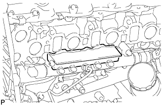
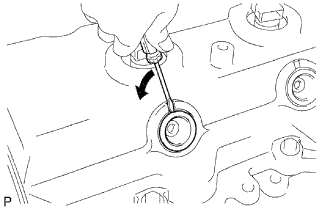
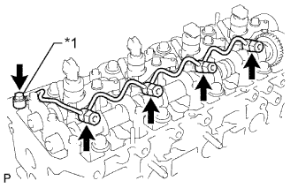

ПРОКЛАДКА ГОЛОВКИ БЛОКА ЦИЛИНДРОВ (для моделей без DPF) > СНЯТИЕ |
| 1. ОТСОЕДИНИТЕ ПРОВОД ОТ ОТРИЦАТЕЛЬНОГО ВЫВОДА АККУМУЛЯТОРНОЙ БАТАРЕИ |
| 2. СНИМИТЕ НИЖНЮЮ ОБЛИЦОВКУ ПЕРЕДНЕГО БАМПЕРА |
Освободите фиксатор, выверните 5 болтов и снимите нижнюю накладку переднего бампера.
| 3. СНИМИТЕ ЗАЩИТУ КАРТЕРА ДВИГАТЕЛЯ № 1 В СБОРЕ |
Выверните 4 болта и снимите защиту картера двигателя № 1.
| 4. СЛЕЙТЕ ОХЛАЖДАЮЩУЮ ЖИДКОСТЬ ДВИГАТЕЛЯ |
Ослабьте пробку сливного крана радиатора.
 |
Слейте охлаждающую жидкость, сняв пробку расширительного бачка, а затем с помощью ключа снимите вентиляционную пробку.
Ослабьте пробку сливного крана блока цилиндров.

| *1 | Бачок радиатора | *2 | Вентиляционная пробка |
| *3 | Пробка сливного крана радиатора | *4 | Пробка сливного крана блока цилиндров |
| 5. СЛЕЙТЕ МОТОРНОЕ МАСЛО |
Снимите крышку маслоналивной горловины.
Выверните пробку сливного отверстия масляного поддона с прокладкой, а затем слейте моторное масло в емкость.
Протрите масляный поддон и пробку сливного отверстия.
Установите новую прокладку и пробку сливного отверстия масляного поддона.
| 6. СНИМИТЕ ВЫПУСКНОЙ КОЛЛЕКТОР С ТУРБОНАГНЕТАТЕЛЕМ |
Снимите выпускной коллектор с турбонагнетателем (Нажмите здесь).
| 7. СНИМИТЕ ВПУСКНОЙ КОЛЛЕКТОР |
Снимите впускной коллектор (Нажмите здесь).
| 8. СНИМИТЕ СВЕЧУ НАКАЛИВАНИЯ В СБОРЕ |
Снимите свечи накаливания (Нажмите здесь).
| 9. СНИМИТЕ ИЗОЛЯТОР ВПУСКНОГО КОЛЛЕКТОРА № 2 |
|  |
Снимите изолятор впускного коллектора № 2
| 10. СНИМИТЕ ТРУБКУ ПОДВОДА ТОПЛИВА |
Выверните болт и снимите зажим.
С помощью разрезной головки на 17 мм ослабьте гайки штуцеров и снимите трубку подвода топлива.
| *a | Со стороны топливной системы Common Rail |
| *b | Сторона нагнетающего топливного насоса |
| 11. СНИМИТЕ ТОПЛИВНУЮ СИСТЕМУ COMMON RAIL В СБОРЕ |
Подсоедините разъем датчика давления в топливной системе и разъем клапана сброса давления.
Выверните 2 болта и снимите топливную систему Common Rail и изолятор впускного коллектора № 2.
| 12. СНИМИТЕ КРЫШКУ ГОЛОВКИ БЛОКА ЦИЛИНДРОВ № 2 В СБОРЕ |
 |
Выверните 4 болта и снимите крышку головки блока цилиндров № 2.
| 13. СНИМИТЕ ВАКУУМНУЮ ТРУБКУ № 3 В СБОРЕ |
Отсоедините вакуумный шланг.
Выверните болт и отсоедините вакуумную трубку № 3.
| 14. СНИМИТЕ УПЛОТНИТЕЛЬНОЕ КОЛЬЦО ФОРСУНКИ В ГОЛОВКЕ БЛОКА ЦИЛИНДРОВ |
|  |
С помощью небольшой отвертки снимите 4 уплотнительных кольца, поддев часть между каждым уплотнительным кольцом и вырезом крышки головки блока цилиндров.
| 15. СНИМИТЕ КРЫШКУ ГОЛОВКИ БЛОКА ЦИЛИНДРОВ В СБОРЕ |
Выверните 10 болтов, отверните 2 гайки и снимите крышку головки блока цилиндров и прокладку.
| 16. СНИМИТЕ ФОРСУНКУ В СБОРЕ |
|  |
Выверните пустотелый соединительный болт-штуцер, 4 полых винта форсунок и снимите 5 прокладок и трубопровод обратного слива топлива.
| *1 | Пустотелый соединительный болт-штуцер |
 |
Выверните 4 болта и снимите 4 шайбы, 4 фиксатора корпуса форсунок № 1 и 4 форсунки.
Снимите кольцевое уплотнение с каждой форсунки.
Снимите 4 седла форсунок с головки блока цилиндров.
| 17. СНИМИТЕ ПРИВОДНОЙ РЕМЕНЬ ГАЗОРАСПРЕДЕЛЕНИЯ |
Снимите приводной ремень газораспределения (Нажмите здесь).
| 18. СНИМИТЕ ОПОРНЫЙ РОЛИК ПРИВОДНОГО РЕМНЯ ГАЗОРАСПРЕДЕЛЕНИЯ № 1 В СБОРЕ |
С помощью шестигранного ключа на 10 мм выверните болт и снимите опорный ролик приводного ремня газораспределения № 1 и шайбу.
| 19. СНИМИТЕ ЗУБЧАТОЕ КОЛЕСО РАСПРЕДВАЛА |
 |
Выверните болт зубчатого колеса распредвала, удерживая распредвал ключом.
Снимите зубчатое колесо распредвала.
| 20. СНИМИТЕ КРЫШКУ РЕМНЯ ГАЗОРАСПРЕДЕЛЕНИЯ № 2 |
 |
Выверните 4 болта, отверните гайку и снимите крышку ремня газораспределения № 2.
| 21. СНИМИТЕ ИЗОЛЯТОР БЛОКА ЦИЛИНДРОВ |
 |
Снимите изолятор блока цилиндров с головки блока цилиндров.
| 22. СНИМИТЕ РАСПРЕДВАЛ |
 |
Поверните распредвал с помощью ключа таким образом, чтобы шпоночная канавка распредвала была направлена вверх.
| *1 | Шпоночная канавка |
 |
В несколько приемов равномерно ослабьте 15 болтов крышек подшипников в последовательности, показанной на рисунке.
Выверните 15 болтов крышек подшипников и снимите 5 крышек подшипников, сальник и 2 распредвала.
| 23. СНИМИТЕ ГОЛОВКУ БЛОКА ЦИЛИНДРОВ В СБОРЕ |
В несколько приемов равномерно ослабьте 18 болтов головки блока цилиндров в последовательности, показанной на рисунке. Затем выверните 18 болтов головки блока цилиндров и снимите 18 шайб.
Снимите головку блока цилиндров с установочных штифтов в блоке цилиндров и положите головку блока цилиндров на деревянные бруски на верстаке.
| 24. СНИМИТЕ ПРОКЛАДКУ ГОЛОВКИ БЛОКА ЦИЛИНДРОВ |